Camp Reasoner Photo Album

Camp Reasoner Picture Book
The photo album measures 9 1/2" x 10 1/2". It is leather bond with hand painted design. Oil based paints were used. The album is dark green in color and remains in pristine condition, with exception of some yellowing pages.
The following photographs are contained: They are listed in order as they appear and described as titled in the book.
 Sign At Entrance To Camp Reasoner.
Sign At Entrance To Camp Reasoner.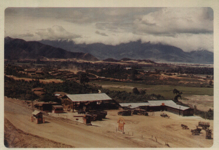
On Hill Overlooking The Main Entrance Looking North.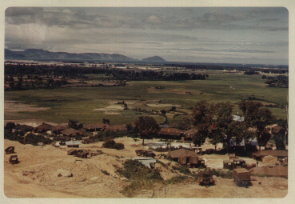
Looking East Over Camp Reasoner.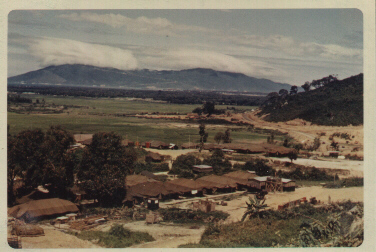
Looking South Over Camp Reasoner.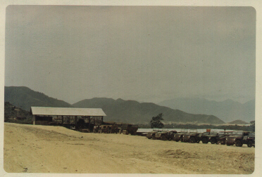
Motor Pool And Maintenance Shop.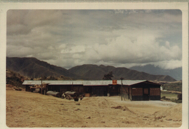
Enlisted Men's Mess Hall And Galley.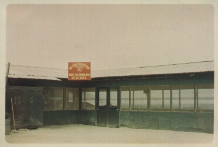
Main Entrance To Mess Hall.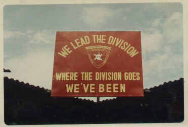
The 3rd Reconnaissance Battalion Motto.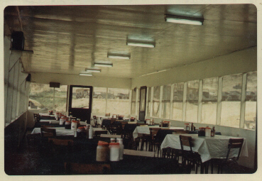
Interior Of Mess Hall.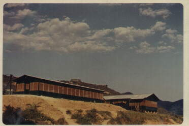
Reasoner Hall - Officer And Staff NCO Mess.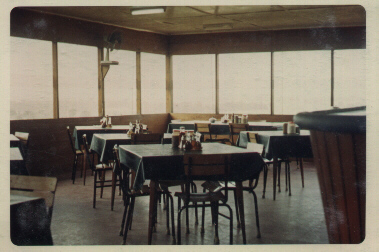
Interior Of Reasoner Hall. Nude Over The Bar In Reasoner Hall.
Nude Over The Bar In Reasoner Hall.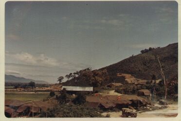
Combat Operations Center With Commanding Officers Quarters In Background. The Combat Operations Center
The Combat Operations Center Battalion Aid Station
Battalion Aid Station Headquarters And Service Company
Headquarters And Service Company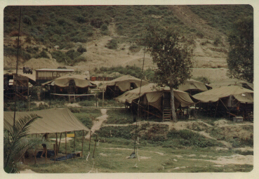
Weight Lifting Area With Quarters In Background.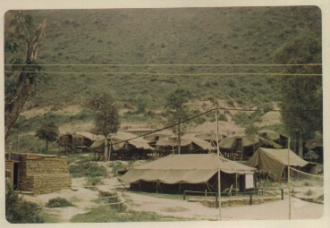
Communications Tent And Command Bunker.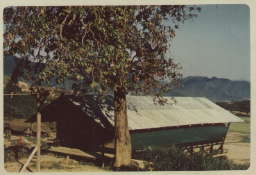
Commanding Officer's Quarters. Amphitheater With Enlisted Club, Wynn Hall, In Background.
Amphitheater With Enlisted Club, Wynn Hall, In Background. Wynn Hall Sign.
Wynn Hall Sign. Wynn Hall.
Wynn Hall. Looking North From Wynn Hall Patio.
Looking North From Wynn Hall Patio.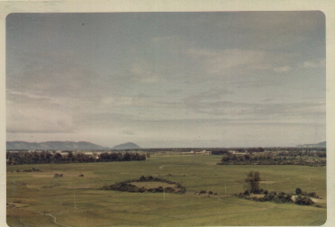
Looking East From Wynn Hall Patio. Looking South From Wynn Hall Patio.
Looking South From Wynn Hall Patio.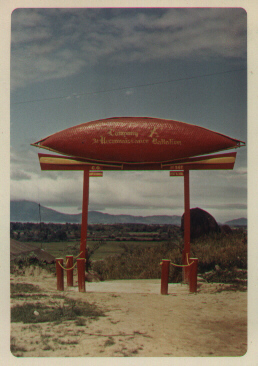
Entrance To Company "A" Area. Company "A"
Company "A"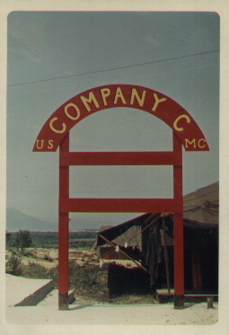
Entrance To Company "C" Area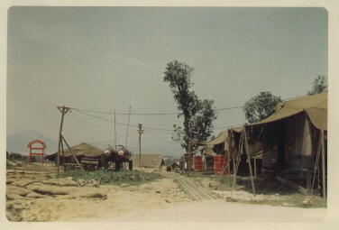
Company "C" Entrance To Company "D"
Entrance To Company "D" Company "D"
Company "D"